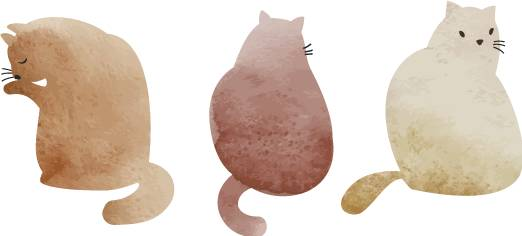
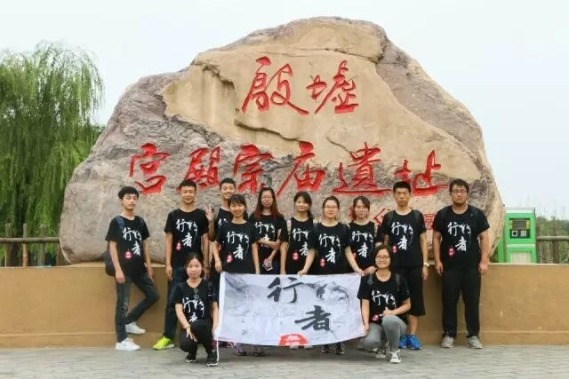
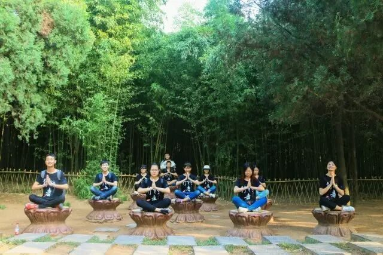
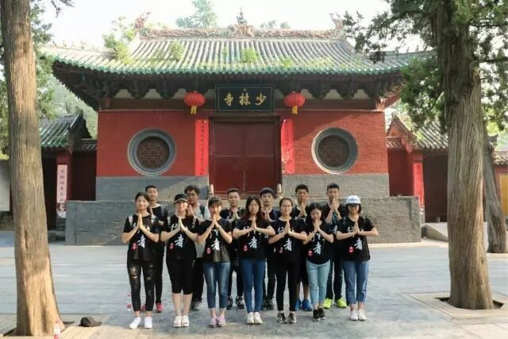
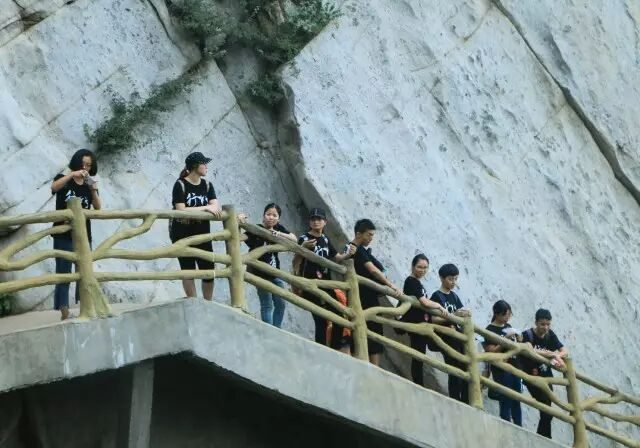
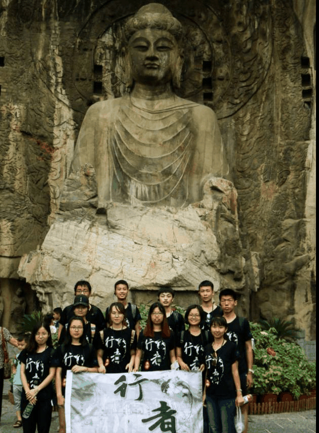

【行者无疆·捌·文化无疆，情谊无疆】
哈哈
行者无疆
文化无疆
情谊无疆
白
1


在安阳悉数文字发展，在殷墟揭开甲骨文的神秘面纱。何为文字，文字为什么这么重要，有什么意义？中华民族何以衍衍不绝？辽辽中原何以聚成一团？虽然这些一直在初中政治课本中文化生活那一个板块中学习过，背诵过。可是只为答题，并没有真正领悟。此次拜访中国文字博物馆，才明白功劳主要在于文字。试想，假如现在没有文字，仅是口口相传，将是怎样的低效与模糊，更别提供后人研究学习了。试想，一个民族文字不统一，内部不能进行交流，怎么可能是一个国家呢？



从安阳辗转到登封，走近少林。从小一直以为少林寺仅仅是出现在影视剧中的，一去才看清其庐山真面目。世人皆知“天下功夫出少林，少林功夫甲天下”，今天看到树上的洞洞，才知道“一指禅”“二指禅”的功力；看到了练功房地面凹下去的地面和方丈用头敲响的大钢钟，不禁感慨少林武功。听导游讲解----相传著名的达摩祖师在 “少林寺”面壁修炼十年的漫长岁月中，言传身教创造了少林武功流派，而且使少林武功一开始就具备了深厚的人文 文化内涵，具有修身养性、善化人性、清净无为的武德。走了这一趟，不由的想起“少林入座嵩山里，南北东西美誉扬。老朽闲来提笔赞，他年何日颂武当。”
。
。


走过少林寺，踏上了“拜访”嵩山的征程。“嵩山高万尺，洛水流千秋。往事不可问，天地空悠悠。”初爬嵩山，树林蓊郁，鸟鸣似乐。再爬便是赤裸的山峰，一步一步爬上去，支撑我们的便是那份对文化探寻的渴望。在此过程中，团队中的小伙伴们互相鼓励、打趣，这才使每一个人坚持下来，没有一个人掉队，真的很赞!


最后一站，便是洛阳。洛阳，应该是一座与佛教渊源最为深厚的城池，自东汉白马驮经于此，佛教的传播便经久不息。除了白马寺，便是赫赫有名的龙门石窟，千百年来，它以其精湛的石雕艺术，吸引着所有对文化感兴趣的人，自然其中包括我们。那宽阔而秀丽的伊水穿流于秀丽的香山和龙门之间，文明遐迩的龙门石窟中大大小小的佛像如灿烂的星座密布于两山的峭壁之上。去过之后才知道，佛教没有渲染世间有不为生死左右的神，而是通过生生世世的轮回，让世人去感悟佛法世界的真谛。历代的帝王为了王权的统一，抑或是为心中无数欲念，将平生的梦想追逐寄托在这巨制宏大的工程里。直至今天，每一个无论是心诚、还是即兴观光的人，都因佛法的恒久、佛像庄重，惊叹甚至于顶礼膜拜。
此次文化之旅，除去对文化点点滴滴的感悟，令我念念不忘的是团队中的每一个人。大家个性各不相同，却相处起来极为融洽，实践过程中更是严谨细心认真负责。写到此处，不得不捶胸顿足嫌弃自己词穷了，只能简单道一句——加入这个实践团队，遇到你们，也许就是我大学社会实践生涯中最幸运的事情；虽然此后不在同一个校区，我仍然希望与你们同在，与行者无疆同在。
祝好
By 熹玮

河南行
且将新火试新茶
诗酒趁年华
行者无疆
♦
贰
公众号：行者无疆实践团
微博号：行丶者丶无丶疆
邮箱：2758025831@qq.com